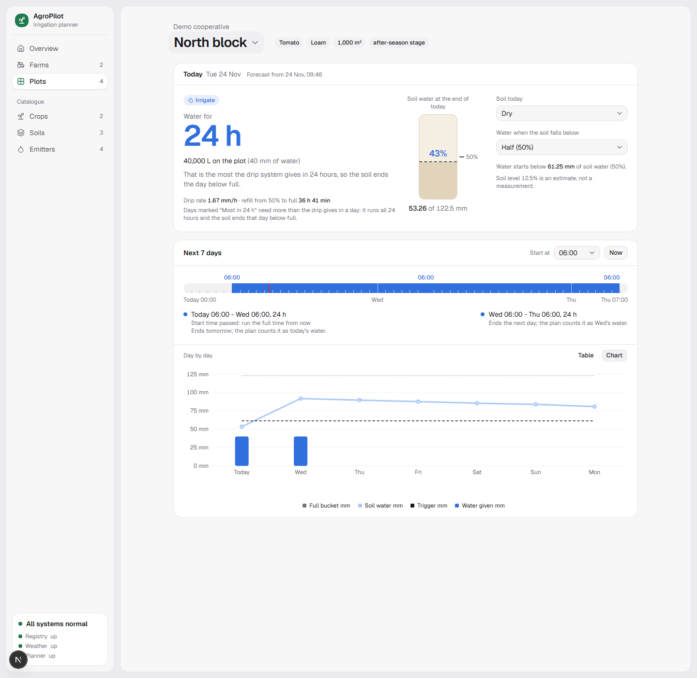

Problem
Farm deleted while a plot saves
Solution
Lock the farm during the save
Why Tech
Same answers on both databases

Plan has minutes, not clock times
Pick start hour; runs cross midnight
The start time is the grower's
The grower opens North block
The website asks the registry: is it a real plot? Its name, crop, soil
The grower says the soil feels dry; the website asks the planner
The planner reads the plot, crop, soil and drip line from the registry
The planner asks weather: saved copy, or a new call to Open-Meteo
Today's answer: water 24 h, 40,000 L
The week: when each run starts and ends
The status line: is each service up?

